前端笔记——Vue.js组件
什么是组件
组件 (Component) 是 Vue.js 最强大的功能之一。组件可以扩展 HTML 元素，封装可重用的代码。在较高层面上，组件是自定义元素，Vue.js 的编译器为它添加特殊功能。在有些情况下，组件也可以表现为用 is 特性进行了扩展的原生 HTML 元素。
全局注册
//以标签的形式使用
<div id="app">
<my-component></my-component>
</div>
//注册
Vue.component('my-component', {
template: '<div>This is a component!</div>'
})
//绑定实例
var vm = new Vue({
el: '#app'
})
或者使用<template>标签（推荐），做到js和html分离使用template标签要把标签内所有内容包含在一个容器里面
<template id="myComponent">
<div>This is a component!</div>
</template>
//注册
Vue.component('my-component', {
template: '#myComponent'
})
注意： 要先注册再创建实例
局部注册
var vm = new Vue({
el: '#app',
components: {
'my-component': {
template: '#myComponent'
}
}
})
局部注册的子组件只能在父组件里使用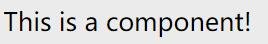
组件里 data 必须是函数
Vue.component('my-component', {
template: '#myComponent',
data: function(){
return {a : 1}
}
})
如果data选项指向某个对象，这意味着所有的组件实例共用一个data。 我们应当使用一个函数作为 data 选项，让这个函数返回一个新对象。
使用props
组件实例的作用域是孤立的。这意味着不能并且不应该在子组件的模板内直接引用父组件的数据。可以使用 props 把数据传给子组件。
var vm = new Vue({
el: '#app',
data: {
name: 'zhangsan',
age: 66
},
components: {
'my-component': {
template: '#myComponent',
props: ['myName', 'myAge']
}
}
})
为了便于理解，你可以将这个Vue实例看作my-component的父组件。 如果我们想使父组件的数据，则必须先在子组件中定义props属性，也就是props: ['myName', 'myAge']这行代码。
模板
<template id="myComponent">
<div>
<p>my age: {{ myAge }}</p>
<p>my name: {{ myName }}</p>
</div>
</template>
使用
<div id="app">
<my-component v-bind:my-name="name" v-bind:my-age="age"></my-component>
</div>
语法：<child-component v-bind:子组件prop="父组件数据属性">
</child-component>
在子组件中定义prop时，使用了camelCase命名法。由于HTML特性不区分大小写，camelCase的prop用于特性时，需要转为 kebab-case（短横线隔开）。例如，在prop中定义的myName，在用作特性时需要转换为my-name。
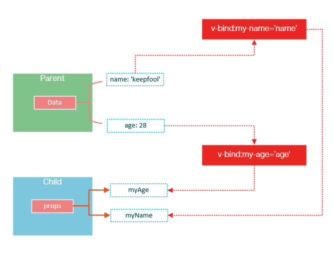prop的绑定类型
既然父组件将数据传递给了子组件，那么如果子组件修改了数据，对父组件是否会有所影响呢？
单向绑定
prop默认是单向绑定：当父组件的属性变化时，将传导给子组件，但是反过来不会。这是为了防止子组件无意修改了父组件的状态
双向绑定
可以使用.sync显式地指定双向绑定，这使得子组件的数据修改会回传给父组件。
<my-component v-bind:my-name.sync="name" v-bind:my-age.sync="age"></my-component>
prop验证
我们可以为组件的 prop 指定验证规则。如果传入的数据不符合要求，Vue 会发出警告。这对于开发给他人使用的组件非常有用。
要指定验证规则，需要用对象的形式来定义 prop，而不能用字符串数组：
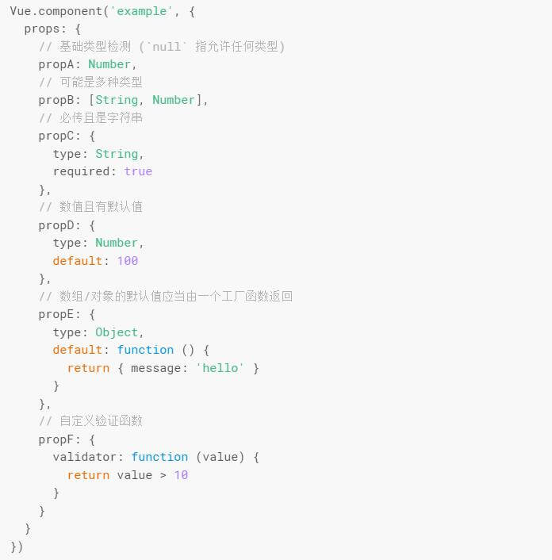编译作用域
组件的模板是在其作用域内编译的，父组件模板的内容在父组件作用域内编译，子组件模板的内容在子组件作用域内编译
在子组件中定义的数据，只能用在子组件的模板。在父组件中定义的数据，只能用在父组件的模板。如果父组件的数据要在子组件中使用，则需要子组件定义props。
slot插槽
单个slot
<div id="app">
<my-component>
<h1>Hello Vue.js!</h1>
</my-component>
<my-component>
</my-component>
</div>
<template id="myComponent">
<div>
<h2>This is a component!</h2>
<slot>如果没有分发内容，则显示slot中的内容</slot>
<p>Say something...</p>
</div>
</template>
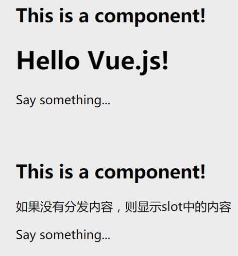
具名插槽
<slot> 元素可以用一个特殊的特性 name 来进一步配置如何分发内容。多个插槽可以有不同的名字。具名插槽将匹配内容片段中有对应 slot 特性的元素。
仍然可以有一个匿名插槽，它是默认插槽，作为找不到匹配的内容片段的备用插槽。如果没有默认插槽，这些找不到匹配的内容片段将被抛弃。
<div id="app">
<my-component>
<h1 slot="header">header--这里可能是一个页面标题</h1>
<p>p--主要内容的一个段落。</p>
<p>p--另一个主要段落。</p>
<p slot="footer">footer--这里有一些联系信息</p>
</my-component>
</div>
<template id="myComponent">
<div class="content">
<header>
<slot name="header"></slot>
</header>
<main>
<slot></slot>
</main>
<footer>
<slot name="footer"></slot>
</footer>
</div>
</template>
渲染结果
<div class="container">
<header>
<h1>这里可能是一个页面标题</h1>
</header>
<main>
<p>主要内容的一个段落。</p>
<p>另一个主要段落。</p>
</main>
<footer>
<p>这里有一些联系信息</p>
</footer>
</div>
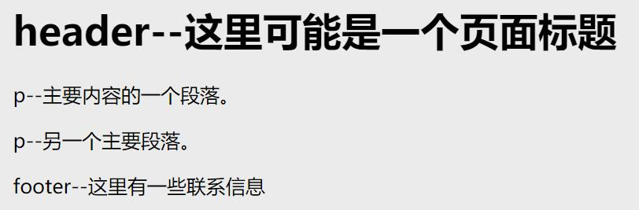
父子组件之间的访问
有时候我们需要父组件访问子组件，子组件访问父组件，或者是子组件访问根组件。 针对这几种情况，Vue.js都提供了相应的API：
- 父组件访问子组件：使用$children或$refs
- 子组件访问父组件：使用$parent
- 子组件访问根组件：使用$root
$children
在父组件中，通过this.$children可以访问子组件。 this.$children是一个数组，它包含所有子组件的实例。
<div id="app">
<parent-component></parent-component>
</div>
<template id="parent-component">
<div>
<child-component1></child-component1>
<child-component2></child-component2>
<button v-on:click="showChildComponentData">显示子组件的数据</button>
</div>
</template>
<template id="child-component1">
<h2>This is child component 1</h2>
</template>
<template id="child-component2">
<h2>This is child component 2</h2>
</template>
Vue.component('parent-component', {
template: '#parent-component',
components: {
'child-component1': {
template: '#child-component1',
data: function() {
return {
msg: 'child component 111111'
}
}
},
'child-component2': {
template: '#child-component2',
data: function() {
return {
msg: 'child component 222222'
}
}
}
},
methods: {
showChildComponentData: function() {
for (var i = 0; i < this.$children.length; i++) {
alert(this.$children[i].msg)
}
}
}
})
new Vue({
el: '#app'
})
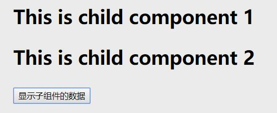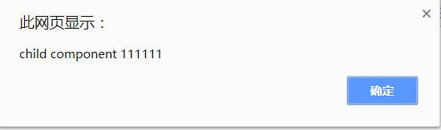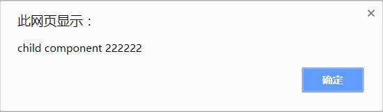
$refs
组件个数较多时，我们难以记住各个组件的顺序和位置，通过序号访问子组件不是很方便。 在子组件上使用v-ref指令，可以给子组件指定一个索引ID：
<template id="parent-component">
<child-component1 v-ref:cc1></child-component1>
<child-component2 v-ref:cc2></child-component2>
<button v-on:click="showChildComponentData">显示子组件的数据</button>
</template>
在父组件中，则通过$refs.索引ID访问子组件的实例：
showChildComponentData: function() {
alert(this.$refs.cc1.msg);
alert(this.$refs.cc2.msg);
}
$parent
<div id="app">
<parent-component></parent-component>
</div>
<template id="parent-component">
<child-component></child-component>
</template>
<template id="child-component">
<div>
<h2>This is a child component</h2>
<button v-on:click="showParentComponentData">显示父组件的数据</button>
</div>
</template>
Vue.component('parent-component', {
template: '#parent-component',
components: {
'child-component': {
template: '#child-component',
methods: {
showParentComponentData: function() {
alert(this.$parent.msg)
}
}
}
},
data: function() {
return {
msg: 'parent component message'
}
}
})
new Vue({
el: '#app'
})
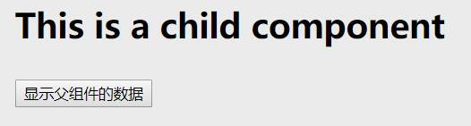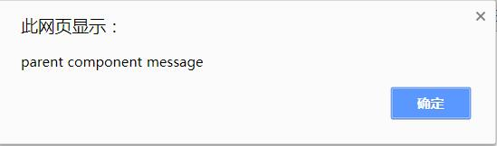
尽管可以访问父链上任意的实例，不过子组件应当避免直接依赖父组件的数据，尽量显式地使用 props 传递数据。另外，在子组件中修改父组件的状态是非常糟糕的做法，因为：
1.这让父组件与子组件紧密地耦合；
2. 只看父组件，很难理解父组件的状态。因为它可能被任意子组件修改！理想情况下，只有组件自己能修改它的状态。
自定义事件
vm.$emit( event, […args] )触发事件
//发送数据，第一个参数是发送数据的名称，接收时还用这个名字接收，第二个参数是这个数据现在的位置；Event.$emit('msg',this.msg);
vm.$on( event, callback )监听事件
//接收数据，第一个参数是数据的名字，与发送时的名字对应，第二个参数是一个方法，要对数据的操作Event.$on('msg',function(msg){ //这里是对数据的操作 })
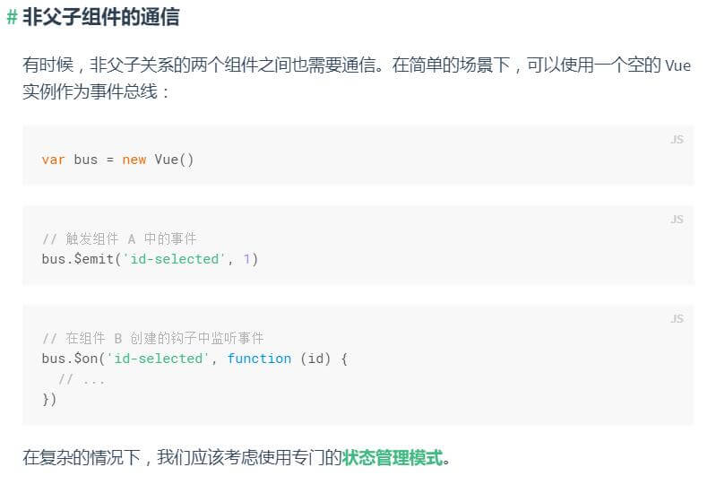